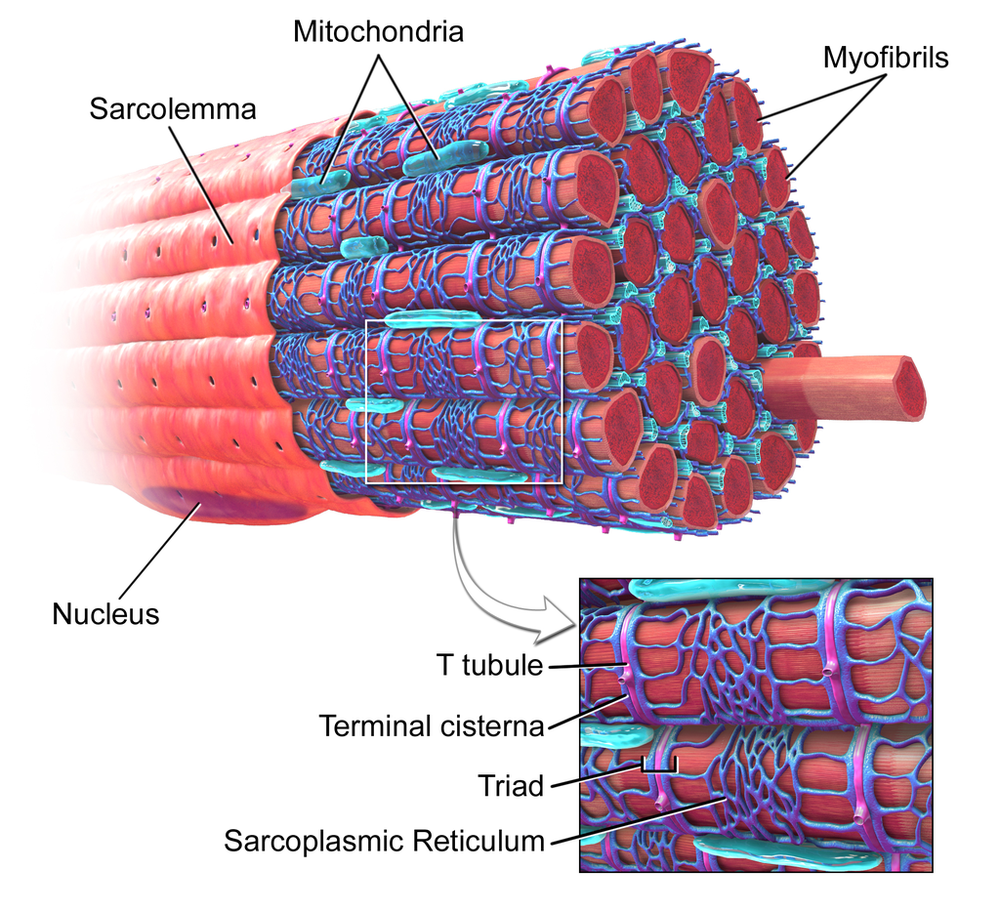

1 Muskelfysiologi I
1.1 Hva er en muskel?
- Kollagenfibre og bindevev
- Beskrivelse: Muskelcellen er omringet av bindevev som inneholder kollagenfibre. Dette vevet er viktig for å gi støtte og beskyttelse til muskelcellene. Det danner også de ytre lagene av muskelen (som epimysium, perimysium og endomysium) (Figure 1.2).
- Basalmembran
- Beskrivelse: Basalmembranen er et lag av ekstracellulær matriks som omgir muskelfiberen og er viktig for strukturell støtte og kommunikasjon mellom muskelcellen og det omkringliggende bindevevet.
- Sarkolemma/myolemma
- Beskrivelse: Sarkolemma er cellemembranen til muskelcellen (muskelfiberen). Den omgir hele muskelfiberen og beskytter innholdet, samtidig som den fungerer som en barriere for ioner og andre molekyler. Den er også ansvarlig for å motta nerveimpulser som får muskelen til å trekke seg sammen.

- Sarkoplasma
- Beskrivelse: Sarkoplasma er cytoplasmaet i muskelcellen, og det er her flere av cellens viktige prosesser skjer. Det inneholder blant annet myoglobin (som lagrer oksygen) og glykogen (som er en energireserve).
- Myofibriller
- Beskrivelse: Myofibriller er de lange, trådformede strukturene i muskelcellen som er ansvarlige for muskelens kontraksjon. De består av repeterende enheter kalt sarkomerer, som inneholder de kontraktile proteinene aktin og myosin.
- Sarkomer
- Beskrivelse: Sarkomeren er den minste funksjonelle enheten i en muskel og er den strukturen som faktisk utfører kontraksjonen. Den består av et arrangert mønster av aktin og myosin.
- Sarkoplasmisk retikulum (SR. Se Figure 1.3)
- Beskrivelse: Sarkoplasmisk retikulum er et spesialisert nettverk av membranøse kanaler i muskelcellen som lagrer kalsiumioner. Når en nerveimpuls når muskelen, frigjøres kalsiumioner fra det sarkoplasmatiske retikulumet, som trigger kontraksjonen ved å regulere interaksjonen mellom aktin og myosin.
- T-tubuli (transversale tubuli)
- Beskrivelse: T-tubuli er rørformede utvidelser av sarkolemma som strekker seg dypt inn i muskelcellen. De er viktige for å overføre elektriske impulser fra overflaten av muskelcellen til de indre delene, slik at hele muskelfiberen kan kontrahere samtidig.
- Mitokondrier
- Beskrivelse: Mitokondriene er cellens “kraftverk”, som produserer energi i form av ATP (adenosintrifosfat) gjennom celleånding. Muskelceller, spesielt i skjelettmuskulaturen, har mange mitokondrier for å imøtekomme det høye energibehovet som kreves under muskelarbeid.
- Myonuklei
- Beskrivelse: Muskelceller, spesielt skjelettmuskulatur, er multinukleære, noe som betyr at de har flere kjerner. Myonuklei ligger på utsiden av myofibrillene, under sarkolemmaen, og styrer cellefunksjoner som proteinsyntese og cellemetabolisme.
- I korte trekk er myonuklei essensielle for muskelens vekst, funksjon og reparasjon, og deres tilstedeværelse gjør at muskelcellene kan håndtere de store kravene som kommer med belastning og aktivitet.
- 1.4 - 1.7 % av myonuklei kommer fra satelittceller
- Myonuklei er cellekjerner som finnes i muskelfiberne (muskelcellene).
- Kontraktile proteiner
- Myosin
- Tykke filamenter som er ansvarlige for å trekke seg sammen og generere kraft under muskelkontraksjon.
- Aktin
- Tynne filamenter som danner strukturer som interagerer med myosin for å muliggjøre muskelkontraksjon.
- Tropomyosin
- Et regulatorisk protein som dekker aktinfilamentene og hindrer myosin fra å binde seg til aktin når muskelen er i hvile.
- Troponin
- Et annet regulatorisk protein som er knyttet til tropomyosin og hjelper til med å regulere muskelkontraksjon ved å binde kalsiumioner, som aktiverer samspillet mellom aktin og myosin.
- Myosin
1.1.1 Myogenese
- Celler som blir muskelceller stammer fra mesoderm i fosterlivet
- Mesoderm = brusk, bein, bindevev, blodårer, muskler, ekskresjonsorganer
- Ektoderm = hud, hår, negler, nervevev
- Endoderm = slimhinner, fordøyelseskanal, kjertler, lunger
- Satelittcellene låser seg til en viss type celle (committed cells)
- Modning av muskelcelle: myf5, myod, myog, mrf4
1.1.2 Satelittceller
- Satellittceller er stamceller som er viktige for muskelreparasjon og vekst. De bidrar til muskelens evne til å tilpasse seg fysisk belastning ved å legge til myonuklei og dermed støtte reparasjon og økt muskelmasse.
- Satelittceller ligger mellom sarkolemma og basalmembranen
- Basalmembranen ligger utenfor sarkolemma og er en ekstracellulær matrix. Basalmembranen omgir heler muskelen, mens sarkolemma, som ligger på innsiden, er en membran som omgir muskelfiberen, se Figure 1.1 og Figure 1.3.
- Basalmembranen er viktig for stabiliteten og integriteten til muskelfiberen, og den gir også et sted for satellittceller å være plassert.
- Muskelceller er postmitotiske
- I muskelvev refererer postmitotisk status til muskelens evne til å vokse eller reparere seg selv gjennom mekanismer som ikke involverer celledeling. I stedet for å dele seg, kan muskelceller øke i størrelse (hypertrofi), eller muskelvevet kan bruke satellittceller (som er en type stamcelle) til å hjelpe til med reparasjon og vekst. Kort sagt, postmitotisk betyr at muskelcellene ikke lenger deler seg, men har nådd et modent stadium der deres hovedfunksjon er å utføre arbeid og tilpasse seg belastning (for eksempel ved hypertrofi).
1.1.3 Hva er en muskelcelle?
- største tubulære cellene - opptil 20 cm lange og 10.000 \(\mu m^{2}\)
- Multinukleære
- 70-85 % myofibriller
- 5-10 % mitokondrielt og sarkoplasmatisk retikulum
- Mitokondrier er plassert nært myofibrillene og der det er størst behov for rask energi. Større konsentrasjon av mitokondrier i muskulatur der det er større krav til okygenering (aerobe prosesser), type I fiber.
- Sarkoplasma (cytoplasma)
- Inneholder enzymer og molekyler som er viktig for produksjon av ATP
- SR - sarkoplasmatisk retikulum. Lagrer og frigjør kalsiumioner (\(Ca^{2+}\))
- Sarcolemma - transportproteiner, ligand-reseptorer (mottar stimuli utenfra), ankring av myofibriller for kraftoverføring
1.1.4 Hva er utenfor muskelcellen?
- 85-90 % av muskelvevet er muskelceller
- Antall celler per 100 muskelceller:
- 10 satelittceller
- 2 lymfocytter
- 20 makrofager
- 13 fibroblaster
- 35 pericytter
- 200 kapillærer (endotelceller)
- 30 FAP celler
1.1.5 Hva er bestanddelene i en muskel?
- Nerver
- Blodårer
- Immunceller
- Bindevev/extracellulær matrix
- Muskelfibre
1.1.6 Sirkulasjon i muskel
- Stor nettverk av kapillærer.
- Epitelceller
- Pericytter
- Glatte muskelceller
- Blodstrøm reguleres av vasokonstriksjon
- Vasokonstriktorer
- Vasodilatorer
- Angiogenese reguleres av VEGF (Vascular Endothelial Growth Factor).
- Det er en viktig proteinfamilie som regulerer dannelsen av blodårer, en prosess kjent som angiogenese.
- I konteksten av sirkulasjon i muskel, spiller VEGF en viktig rolle i å stimulere dannelsen av nye kapillærer, spesielt i vev som har høy metabolsk aktivitet eller som lider av oksygenmangel (hypoksi). Dette kan være spesielt relevant for muskelvev under trening eller etter skader.
- VEGF påvirker endotelcellene (de cellene som kler innsiden av blodkar) ved å øke permeabiliteten deres og stimulere til celleproliferasjon, som gjør at blodkarene kan vokse og forgrene seg. VEGF har også en rolle i å regulere blodstrømmen i respons på fysiologiske behov, som under intens fysisk aktivitet, hvor det kan fremme økt blodtilførsel til musklene for å støtte deres oksygen- og næringsbehov.
1.1.7 “Immunometabolism” i muskel
- I et bredt perspektiv handler immunometabolisme i muskel om hvordan energibalanse, betennelse og immunrespons henger sammen. Dette samspillet er viktig for muskelhelse, regenerering, tilpasning til trening, og for å forstå sykdomsprosesser som involverer muskelatrofi eller betennelse.
- Meget komplekst
- IL-6 (Interleukin 6) er et viktig cytokin, som er et signalmolekyl som brukes av immunsystemet for å kommunisere og regulere ulike cellefunksjoner. IL-6 er en del av et bredt spekter av cytokiner som er involvert i immunresponsen, betennelse og cellevekst. (Cytokiner er små proteiner som fungerer som signalmolekyler i kroppen, og de er avgjørende for immunsystemets kommunikasjon og regulering av betennelse, immunrespons, og vevsreparasjon.)
- Økt IL-6 ved trening øker glukoseopptak og virker anti-inflammatorisk
- Kronisk økt IL-6 hemmer glukoseopptak og virker pro-inflammatorisk
1.1.8 Fibertyper
- I, IIa, IIx, IIb
- ca. 50/50 i vastus lateralis
1.1.9 Extracellulær matrix
- Kort sagt fungerer den ekstracellulære matriksen som en dynamisk plattform som støtter muskelcellene, påvirker deres funksjon og bidrar til heling og reparasjon ved behov.
- Strukturell integrasjon, støtte og struktur
- Signaloverføring og tilpasning til belastning
- Reparasjon ved skade
- Integrasjon med senevev
- Inflammatorisk regulering
- Hyaluronsyre - “smøremiddel”. Opprettholder fleksibilitet og bevegelighet i muskelvevet
- fibronectin - “the master organizer”
- reticulær lamina
- fibrillære kollagener
- basallamina
1.1.10 Cytoskjellet
- Cytoskjelettet samarbeider med ekstracellulær matriks (ECM) for å opprettholde cellens form og organisering i vev.
- Stillas for sarkomerene
- Costamerer
- Intermediære filamenter
1.1.11 Sarkomeren
- Oppbygging
- Kontraktile proteiner
- Myosin-assosierte proteiner
- Aktin-assosierte proteiner
- Andre
- Titin
- Z-skive-assosierte proteiner
- Intermediære filamenter
- Costamerproteiner
1.1.12 Eksitasjon - kontraksjon
- Muskelfibre er innervert av motoriske nerveceller
- Elektrisk signal
- Kjemisk signal
- Aksjonspotensial
1.1.13 Kraftutvikling
1.2 Form dikterer funksjon
1.2.1 Lengde/spenning
- Kan endres på muskelnivå, ikke på sarkomernivå
- Flere sarkomerer i en serie
- mindre viktig ved høyere hastigheter
1.2.2 Grad av hastighet på aktiviering
- Konsentrasjon av \(Ca^{2+}\) regulerer interaksjonen mellom aktin og myosin
1.2.3 Grad av hastighet på relaksjon
- Kun avgjørende ved syklisk arbeid med høy frekvens
1.2.4 Kraft - hastighet (konsentrisk)
1.2.5 Kraft - hastighet (eksentrisk)
1.2.6 Sammenhengen mellom lengde, kraft og hastighet
1.2.7 Passiv stivhet
1.2.8 Muskeltverrsnitt og kraft
- Flere fibre = mer kraft
- Flere kryssbroer/flere sarkomerer = mer kraft
1.2.9 Antall sarkomerer i parallell
- Elder personer, typisk stor forskjell mpå fibre
- Etter trening typisk mer homogene fibre (reduksjon i atrofi)
1.2.10 Muskelarkitektur
- Fjærforming
- Seriekoblede muskelfibre
- Fysiologisk og anatomisk tverrsnitt
1.2.11 Ytre vektarmer
1.2.12 Indre vektarmer
- Distanse fra omdreningspunkt (ledd), til muskelens kraftlinje over ledd
1.2.13 Fyringsfrekvens
1.2.14 Rekrutteringshierarkiet
1.3 Artikler
1.3.1 Molecular Responses To Acute Exercise And Their Relevance For Adaptations In Skeletal Muscle To Exercise Training1
1.3.2 Mechanisms of mechanical overload-induced skeletal muscle hypertrophy: current understanding and future directions2
1. Egan, B., & Sharples, A. P. (2023). Molecular responses to acute exercise and their relevance for adaptations in skeletal muscle to exercise training. Physiol. Rev., 103(3), 2057–2170.
2. Roberts, M. D., McCarthy, J. J., Hornberger, T. A., Phillips, S. M., Mackey, A. L., Nader, G. A., Boppart, M. D., Kavazis, A. N., Reidy, P. T., Ogasawara, R., Libardi, C. A., Ugrinowitsch, C., Booth, F. W., & Esser, K. A. (2023). Mechanisms of mechanical overload-induced skeletal muscle hypertrophy: Current understanding and future directions. Physiol. Rev., 103(4), 2679–2757.